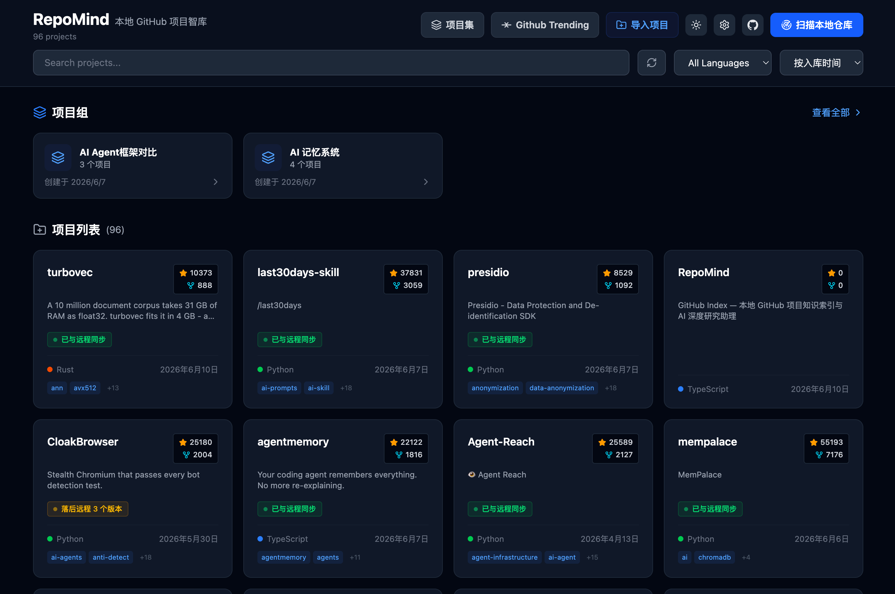

RepoMind 是一款轻量、极速的本地 GitHub 项目大屏与分析面板。一键扫描多目录，自动对比远端提交状态，分组聚合你的所有代码资产。

告别在终端来回切换 `cd` 和 `git status` 的繁琐过程，用一张看板洞察所有项目。
瞬间扫描指定本地目录下的所有 Git 仓库，智能读取分支、提交哈希与主要开发语言。
自由聚合不同物理路径下的相关仓库，例如将所有后端微服务或微前端工程划入一个项目组，进行聚合管理。
自动拉取并检测本地分支与 GitHub 远端分支的领先/落后提交数量，拒绝提交冲突与落后的本地代码。
只需简单三步，即可在本地开启 RepoMind 大屏看板。
git clone https://github.com/lepfinder/RepoMind.git cd RepoMind npm install
npm run scan
npm run dev